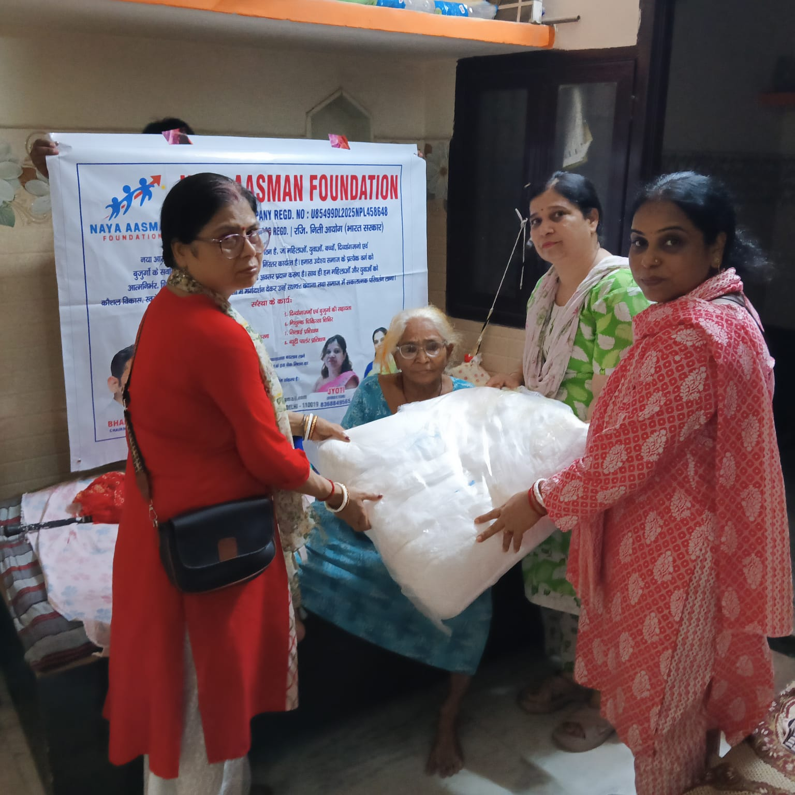

The health of mothers and children forms the foundation of a healthy and prosperous community. Proper care during pregnancy and early childhood plays a crucial role in minimizing health risks and giving every child the best possible start in life.
At Naya Aasman Foundation, we are committed to supporting expectant mothers, newborns, and young children through comprehensive maternal and child health initiatives. By collaborating with government health departments, public health centers, hospitals, and community partners, we strive to improve access to quality healthcare, nutrition, and essential health services for underprivileged families.
Our program focuses on educating and empowering women by providing information on:
Through health awareness sessions, medical consultations, nutritional support, and regular community engagement, we assist mothers in making informed healthcare decisions for themselves and their children.
By promoting healthy pregnancies, safe deliveries, and proper child care, Naya Aasman Foundation aims to reduce preventable health complications, improve the well-being of mothers and children, and ensure every child has the opportunity to grow up healthy, safe, and ready to reach their full potential.
← Back to Home